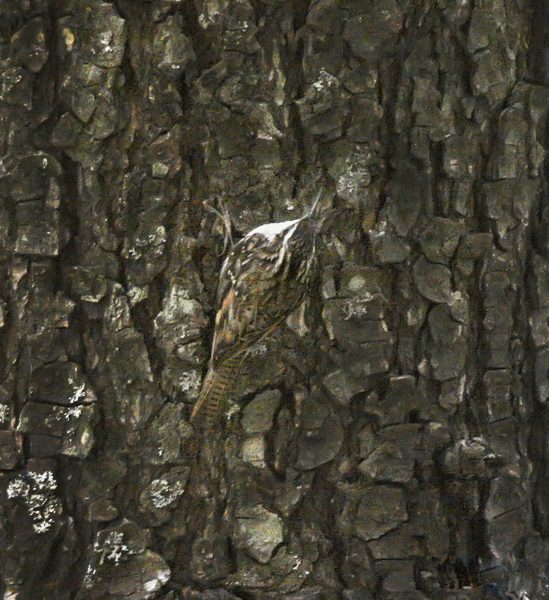

बार-टेल्ड ट्रीक्रीपरBar-tailed Treecreeper
Certhia himalayana · Certhiidae · BRD-0379

- Scientific name वैज्ञानिक नाम
- Certhia himalayana Vigors, 1832
- Family कुल
- Certhiidae
- Hindi हिंदी
- बार-टेल्ड ट्रीक्रीपर
- Local names स्थानीय नाम
- bar-tailed treecreeper, himalayan treecreeper
- Status here यहाँ की स्थिति
- native
- Movement आवागमन
- Winter visitor
- Known from कहाँ दर्ज
- Others have published records from the wider Awadh–Purvanchal plain, none yet from Basti–Ayodhya अवध–पूर्वांचल से दूसरों के प्रकाशित अभिलेख, बस्ती–अयोध्या से अभी नहीं
- IUCN IUCN
- LC
- Review समीक्षा
- not yet reviewed
When to look कब देखें
Winter visitor शीतकालीन प्रवासी. Expected mainly in February, April, December. मुख्यतः फ़रवरी, अप्रैल, दिसंबर में अपेक्षित।
Breeds in the Himalayas from South Kashmir to western Assam; recorded rarely in the lowlands in winter (Baker 1922). GBIF records in Uttar Pradesh fall in February, April, and December. All migrants and visitors →
Tell it apart from इनसे अलग पहचानें
बार-टेल्ड ट्रीक्रीपर / Bar-tailed Treecreeper
Certhia himalayana Vigors, 1832 — Certhiidae
बार-टेल्ड ट्रीक्रीपर — हिमालयी वनों की एक छोटी वृक्षचारी चिड़िया, जिसके कुछ शीतकालीन रिकॉर्ड लखीमपुर खीरी की तराई से हैं। इसकी पीठ पेड़ की छाल जैसी चितकबरी भूरी होती है जिस पर बादामी केंद्र वाले पंख होते हैं, और पूंछ पर बारीक आड़ी धारियां होती हैं। इसकी चोंच पतली और नीचे की ओर मुड़ी होती है, जिसके सहारे यह पेड़ के तने पर चक्कर काटते हुए ऊपर चढ़ती है और छाल की दरारों में छिपे कीड़े निकालती है। पूंछ के कड़े पंखों का सहारा लेकर यह तने पर टिकी रहती है।
Quick Identification त्वरित पहचान
| Feature | Description |
|---|---|
| Habit | Small treecreeper creeping mouse-like up vertical tree trunks and probing deeply into bark crevices |
| Upperparts | Upper plumage and wing-coverts blackish brown, the feathers broadly centred fulvous; rump tinged ferruginous (Baker 1922, p. 430) |
| Tail Pattern | Tail pale reddish brown, regularly barred with black (Baker 1922, p. 430) |
| Wings | All quills except first three or four with broad oblique fulvous band bordered with black (Baker 1922, p. 430) |
| Underparts | Chin and throat pure white; remainder of under plumage pale smoky-brown tinged fulvous (Baker 1922, p. 430) |
| Bare Parts | Upper mandible dark horny-brown or blackish, lower mandible fleshy-horny; legs and feet fleshy (Baker 1922, p. 430) |
Field tip: Look for a small brown treecreeper ascending tree trunks showing broadly fulvous-centred dark mantle and regularly black-barred pale reddish-brown tail (Baker 1922, p. 430).
हिंदी — कैसे पहचानें:
पीठ पर बादामी केंद्र वाले काले-भूरे पंख, पूंछ पर बारीक काली आड़ी धारियां, सफेद गला और तने पर ऊपर चढ़ने का ढंग (बेकर 1922)।
Morphology आकारिकी
Measurements as given by Baker (1922) for the Himalayan Tree-Creeper (Certhia himalayana):
| Measurement | Range |
|---|---|
| Biometrics | Length about 140 mm. ; wing 65 to 71 mm. ; tail 59 to 67 mm. ; tarsus about 18 mm. ; culmen 15 to 22 mm. (Baker 1922) |
Stuart Baker (1922, p. 430) detailed the adult plumage: "Upper plumage and wing-coverts blackish brown, the feathers broadly centred fulvous; lower back, rump, and upper tail-coverts strongly tinged with ferruginous : tail pale reddish brown, regularly barred with black ; a well-developed supercilium pale fulvous ; ear-coverts black ; wings dark brown, all the quills except the first three or four with a broad oblique fulvous band bordered with black ; chin and throat pure white ; remainder of under plumage pale smoky-brown tinged strongly with fulvous."
Colours of soft parts: "Iris dark brown ; upper mandible dark horny-brown or blackish, the lower mandible fleshy-horny ; legs and feet fleshy, claws a little darker" (Baker 1922, p. 430).
Vocalisations: A high-pitched, metallic trilling song delivered while clambering up trunks, accompanied by soft, thin contact notes tsip (Grimmett et al. 2011).
हिंदी:
बेकर (1922) के अनुसार कुल लंबाई लगभग 140 मिमी, डैने 65 से 71 मिमी, पूंछ 59 से 67 मिमी, टार्सस 18 मिमी और चोंच 15 से 22 मिमी होती है। आंखें गहरी भूरी, चोंच काली व नीचे से मांसल, और पैर मांसल रंग के होते हैं।
Behaviour & Ecology व्यवहार और पारिस्थितिकी
Baker (1922, pp. 430–431) recorded: "This Creeper may be rarely found as low as 4,000 feet in winter and in summer ascends to some 10,000 feet. It is, of course, only found in heavily-forested areas but it does not keep entirely to the interior of forest, wandering freely into the more open country wherever there are large trees forming suitable hunting-grounds."
He added: "They are intensely active, restless little birds, never still for a minute, scuttling hither and thither, now racing over the trunk of the tree, now scrambling along the under surface of one of the smaller boughs" (Baker 1922, p. 431). In winter groves it occasionally associates with mixed foraging parties containing insectivorous species such as Oriental Magpie-Robins.
हिंदी:
बेकर (1922) के अनुसार यह सर्दियों में दुर्लभ रूप से 4,000 फीट तक नीचे और गर्मियों में 10,000 फीट तक पाया जाता है। यह घने जंगलों में रहता है परंतु जहां बड़े पेड़ हों वहां खुले क्षेत्रों में भी आ जाता है। यह तनों पर लगातार फुदकता रहता है।
Life Cycle / Phenology जीवन चक्र
Baker (1922, p. 430) recorded the breeding phenology: "The Himalayan Tree-Creeper breeds throughout its range between 6,000' and 9,000 feet or even higher. It is an early breeder... in April and few birds breed later than May".
In Uttar Pradesh, published GBIF occurrence records fall in February, April, and December in mature forested tracts.
हिंदी:
बेकर (1922) के अनुसार यह हिमालय में 6,000 से 9,000 फीट की ऊंचाई पर अप्रैल और मई में पेड़ की छाल या दरार में घोंसला बनाता है। उत्तर प्रदेश में इसके रिकॉर्ड फरवरी, अप्रैल और दिसंबर में हैं।
Host Plants or Prey आहार
Baker (1922, pp. 430–431) noted that it hunts actively on tree trunks and boughs, feeding on small bark-dwelling insects, larvae, and spiders extracted from crevices.
हिंदी:
बेकर (1922) के अनुसार इसका भोजन पेड़ों की छाल में छिपे छोटे कीड़े, भृंग, कीटों के लार्वा और मकड़ियां हैं।
Predators / Natural Enemies शत्रु
Small forest raptors such as sparrowhawks and arboreal snakes hunt small trunk-foraging birds in wooded tracts.
हिंदी:
जंगलों में छोटे शिकारी पक्षी और पेड़ों पर चढ़ने वाले सांप इनका शिकार कर सकते हैं।
Agricultural / Human Relevance कृषि प्रासंगिकता
Consumes wood-boring and bark-dwelling insect pests in timber plantations and orchards, providing biological control in woodland ecosystems. Protected under the Wildlife (Protection) Act, 1972.
हिंदी:
यह पेड़ों की छाल को नुकसान पहुंचाने वाले कीड़ों को खाकर वन संरक्षण में मदद करती है। यह वन्यजीव (संरक्षण) अधिनियम, 1972 के तहत संरक्षित है।
Expected Locally स्थानीय रूप से अपेक्षित
Not a field record. Written from published accounts for eastern Uttar Pradesh. No confirmed local sighting yet — if you have seen it, that is what the atlas needs.
अभी तक स्थानीय पुष्टि नहीं। यह विवरण प्रकाशित स्रोतों से है, किसी अवलोकन से नहीं।
Old-growth sal forests along the northern Terai margins and dense riverside mango and mahua groves with deeply fissured bark offer potential foraging habitat.
GBIF holds published records from the wider Awadh–Purvanchal plain, none yet from Basti–Ayodhya. Regional published records consist of five occurrences from Lakhimpur Kheri district, contributed by 7 observers between 2015 and 2025 during February, April, and December.
A first record would be a photograph with place and date, sent through the About page.
Distribution वितरण
Global range: Baker (1922, p. 430) recorded: "South Kashmir, most of the North-West Himalayas, Garhwal, Nepal, Sikkim, Bhutan to W. Assam."
In India: Baker (1922, p. 430) stated that the Himalayan bird is "rarely found as low as 4,000 feet in winter and in summer ascends to some 10,000 feet."
In Uttar Pradesh: Published records exist from Lakhimpur Kheri in the Terai lowlands during winter and early spring.
In Basti district / eastern UP: GBIF holds no record from Basti or Ayodhya; all five regional records come from Lakhimpur Kheri in the Terai lowlands.
हिंदी:
बेकर (1922) के अनुसार इसका विस्तार दक्षिण कश्मीर, उत्तर-पश्चिम हिमालय, गढ़वाल, नेपाल, सिक्किम, भूटान से पश्चिमी असम तक है। उत्तर प्रदेश में इसके रिकॉर्ड लखीमपुर खीरी के तराई इलाके से दर्ज हैं।
Research Questions शोध प्रश्न
- Which mature tree species (such as Shorea robusta or Mangifera indica) are preferred by lowland wintering treecreepers in Uttar Pradesh? / तराई के जंगलों में यह पक्षी किन पेड़ों की छाल पर चढ़ना अधिक पसंद करता है?
- Does the presence of deeply fissured bark correlate with treecreeper trunk-foraging duration? / क्या गहरी दरारों वाली छाल पर यह पक्षी अधिक समय तक भोजन तलाशता है?
- How do Bar-tailed Treecreepers partition vertical trunk foraging niches when sharing trees with Indian Nuthatches?
- What microclimatic conditions in the northern Terai enable this typically montane species to winter in lowland plains?
- Can local forest guards distinguish treecreepers from nuthatches based on movement direction and tail usage? (An observer can note that treecreepers climb upward using a stiff tail, whereas nuthatches can creep downward headfirst.)
Similar Species मिलती-जुलती प्रजातियाँ
| Species | How to tell apart | हिंदी | |
|---|---|---|---|
| [[indian_nuthatch | Indian Nuthatch]] (Sitta castanea) | Blue-grey upperparts, deep chestnut underparts, straight chisel bill, climbs headfirst downwards on trunks (Baker 1922, p. 124) | इंडियन नटहैच |
Field rule: The slender decurved bill, broadly fulvous-centred dark mantle, and regularly black-barred pale reddish-brown tail climbed with stiff rectrices distinguish the Bar-tailed Treecreeper (Baker 1922, p. 430).
हिंदी:
इंडियन नटहैच की पीठ स्लेटी-नीली और पेट गहरा कत्थई होता है, और वह पेड़ पर सिर के बल नीचे की ओर भी उतर सकता है, जबकि ट्रीक्रीपर केवल ऊपर की ओर चढ़ती है।
Taxonomy & Classification वर्गीकरण
Original description. Described by Nicholas Aylward Vigors in 1832 in Proceedings of the Committee of Science and Correspondence of the Zoological Society of London (Part 1, p. 174), under the binomial Certhia himalayana, with the type locality given as the Himalayas.
Subspecies. Stuart Baker (1922, pp. 430–432) recognized nominate Certhia himalayana himalayana for the Himalayan range.
Family and order placement. Order Passeriformes, family Certhiidae (treecreepers), genus Certhia.
IUCN status rationale. Evaluated as Least Concern (LC) on the IUCN Red List (BirdLife International 2024).
हिंदी:
विगोर्स ने 1832 में हिमालय से इसका वर्णन किया था। बेकर (1922) ने इसकी हिमालयी उपप्रजाति दर्ज की थी। आधुनिक वर्गीकरण में इसकी चार उपप्रजातियां मानी जाती हैं। यह संकट-मुक्त (LC) है।
Photo Gallery फोटो गैलरी
No photos yet — add field photos to media/species/bar_tailed_treecreeper/ and run node scripts/sync_photos.js.
Photos needed आवश्यक फोटो
- [ ] Adult bird ascending tree trunk showing barred tail feathers (पेड़ के तने पर चढ़ता पक्षी जिसमें धारीदार पूंछ दिखे)
- [ ] Profile view showing curved slender bill probing bark (छाल में चोंच डालकर कीड़े खोजता पक्षी)
References संदर्भ
- Vigors, N. A. (1832). Proceedings of the Committee of Science and Correspondence of the Zoological Society of London. Part 1. London, p. 174 (as Certhia himalayana).
- Baker, E. C. S. (1922). The Fauna of British India, Including Ceylon and Burma. Birds. Vol. 1. 2nd ed. Taylor & Francis, London, pp. 430–432 (as Certhia himalayana himalayana).
- Ali, S. & Ripley, S. D. (1987). Compact Handbook of the Birds of India and Pakistan. 2nd ed. Oxford University Press, New Delhi.
- Grimmett, R., Inskipp, C. & Inskipp, T. (2011). Birds of the Indian Subcontinent. 2nd ed. Christopher Helm, London.
- Rasmussen, P. C. & Anderton, J. C. (2012). Birds of South Asia: The Ripley Guide. 2nd ed. Smithsonian Institution and Lynx Edicions, Washington, D.C. and Barcelona.
- BirdLife International (2024). Certhia himalayana. The IUCN Red List of Threatened Species 2024: e.T22711253A264219804. doi:10.2305/iucn.uk.2024-2.rlts.t22711253a264219804.en
- GBIF Occurrence Data — Certhia himalayana, India (2025).
Source file: species/fauna/birds/bar_tailed_treecreeper.md